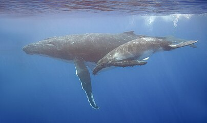

Humpback Whales Sing the Way Humans Speak
The animals’ complex songs share structural patterns with human language that may make them easier for whales to learn, a new study suggests.
By Emily Anthes
Feb. 6, 2025
The English language is full of wonderful words, from “anemone” and “aurora” to “zenith” and “zodiac.”
But these are special occasion words, sprinkled sparingly into writing and conversation. The words in heaviest rotation are short and mundane. And they follow a remarkable statistical rule, which is universal across human languages: The most common word, which in English is “the,” is used about twice as frequently as the second most common word (“of,” in English), three times as frequently as the third most common word (“and”), continuing in that pattern.
Now, an international, interdisciplinary team of scientists has found that the intricate songs of humpback whales, which can spread rapidly from one population to another, follow the same rule, which is known as Zipf’s law.
The scientists are careful to note that whale song is not equivalent to human language. But the findings, they argue, suggest that forms of vocal communication that are complex and culturally transmitted may have shared structural properties.


And they follow a remarkable statistical rule, which is universal across human languages: The most common word, which in English is “the,” is used about twice as frequently as the second most common word
“We expect them to evolve to be easy to learn,” said Simon Kirby, an expert on language evolution at the University of Edinburgh and an author of the new study. The results were published on Thursday in the journal Science.
“We think of language as this culturally evolving system that has to essentially be passed on by its hosts, which are humans,” Dr. Kirby added. “What’s so gratifying for me is to see that same logic seems to also potentially apply to whale song.”
Zipf’s law, which was named for the linguist George Kingsley Zipf, holds that in any given language the frequency of a word is inversely proportional to its rank.
There is still considerable debate over why this pattern exists and how meaningful it is. But some research suggests that this kind of skewed word distribution can make language easier to learn*.*
If these word distributions evolved because they helped learning, scientists might also expect to find similar patterns in other complex, culturally transmitted communication systems. “And whale song is a great place to look,” said Inbal Arnon, an expert on language acquisition at Hebrew University and an author of the new study.
Male humpback whales sing long, elaborate songs, which are composed of a variety of sounds strung together in repeated phrases and themes. All the male whales in a particular humpback population sing the same song, but that song evolves over time — sometimes gradually and sometimes all at once
“We have song revolutions, and that’s when a song is introduced from a neighboring population,” said Ellen Garland, an expert on humpback whale songs at the University of St. Andrews and an author of the new paper. “So the song type turns up, and then it completely takes over.”
Precisely how that happens remains a mystery, and whale song researchers face a challenge that human language researchers don’t: They’re not native speakers.
So the scientists’ first challenge was to divide the songs into meaningful units, determining where one “word” ended and another began. To do so, they used a quantitative approach inspired by human babies. Infants, research suggests, use basic statistical reasoning to identify discrete words in a continuous stream of human speech; syllables that occur together are likely to be part of the same word.
The researchers transformed humpback whale songs, recorded over eight years in the waters around New Caledonia, into long sequences of basic sound elements, including various types of squeaks, grunts, whistles, groans and moans. Then, they identified “subsequences” of sounds that frequently occurred together — such as a short ascending whistle followed by a squeak — and might be roughly analogous to a word.
The frequency with which these subsequences were used followed Zipf’s law, the researchers found. In 2010, for instance, groan-groan-moan was the most common subsequence, appearing about twice as often as the next most common sequence, which was a moan followed by three ascending cries. The most frequently used subsequences were also generally shorter than the rarer ones.

A spectrogram of a 2017 whale song recording. Operation Cetaces
Humans and humpback whales are not closely related, and whale song does not carry the same semantic meaning that human language does, Dr. Garland said. But both communication systems are culturally transmitted, learned from others in the community and passed down over the generations. “So this really points to the crucial role of learning and transmission in the emergence of structure,” she said.
Shane Gero, a marine biologist who was not involved in the research, said that he found the study “elegant” and convincing. The results raise the possibility that linguistic laws derived from studies of human communication may actually be broader biological principles, he said.
“The fact that maybe they generalize if we know enough and we study long enough, then that’s really interesting,” said Dr. Gero, who is a scientist-in-residence at Carleton University. “Anytime we look deeper and listen longer, we find interesting complexity.”
Indeed, the next step is to determine whether the phenomenon extends to other animals with similar communication systems.
“We should find these statistical properties in any culturally transmitted system of sequential signaling,” Dr. Arnon said. “So we have bats to look at, we have songbirds to look at, we have elephants, maybe, to look at.”
The findings dovetail with published this week, which found that the vocalizations produced by 11 species of dolphins and whales follow one of the efficiency rules observed in human language. The rule, known as Menzerath’s law, holds that the longer a sequence becomes, the shorter its individual components tend to be; long sentences, for instance, tend to have shorter words.
The study, which was published in Science Advances on Wednesday, documented this same pattern in a diverse array of cetaceans, including humpbacks, which produce melodic songs; sperm whales, and bottlenose dolphins, which are known for their whistles.
“Regardless of what their vocalizations are used for, they all seem to try to communicate as efficiently as they can,” said Mason Youngblood, a postdoctoral researcher at Stony Brook University and the author of the study.
The pattern, which has also been documented in birds and nonhuman primates, may have evolved as a way to reduce the costs of communication.
“Things like bird song and whale song are very hard to learn,” Dr. Youngblood said. “And then when you sing, it’s very energetically costly. It can attract the attention of predators. And so because of that, you would expect communication systems to evolve to cut those costs wherever it’s possible.”
[**Emily Anthes](https://www.nytimes.com/by/emily-anthes) is a science reporter, writing primarily about animal health and science. She also covered the coronavirus pandemic. [More about Emily Anthes](https://www.nytimes.com/by/emily-anthes)**